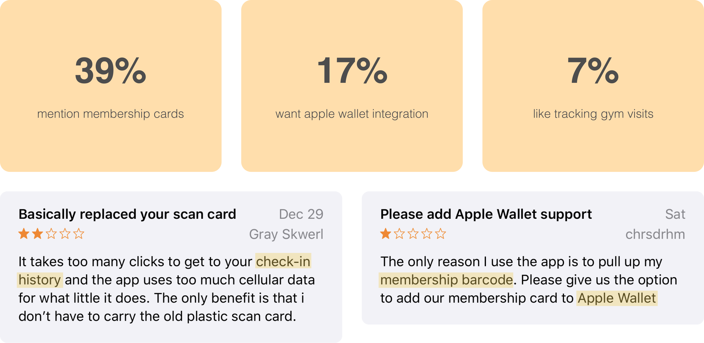
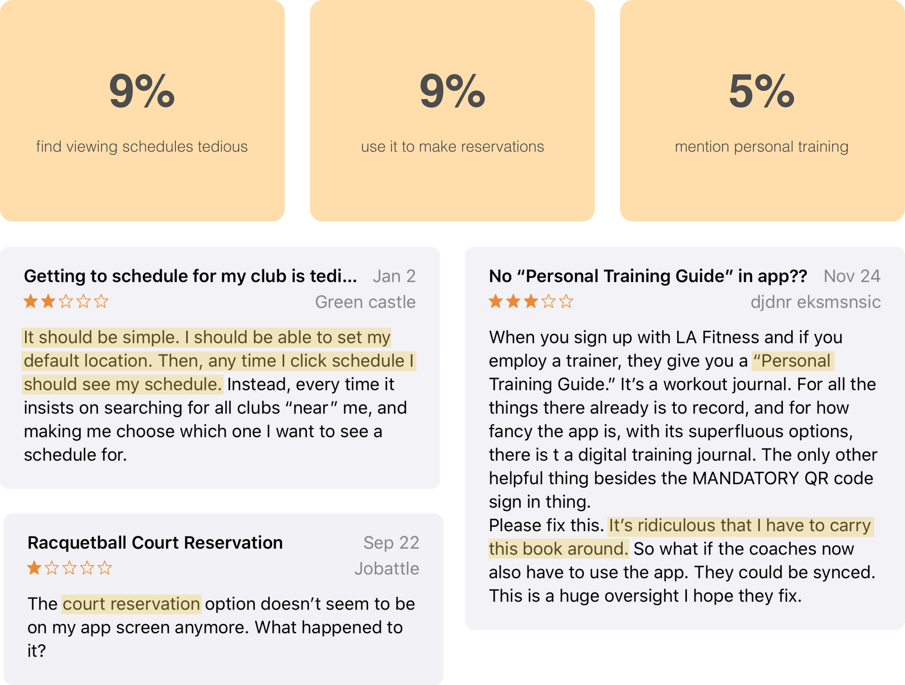

LA FITNESS iOS REDESIGN
—Mobile App for gym members to maximize fitness opportunities
PROJECT TYPE
Individual Project
DELIVERABLES
High Fidelity Mockups
DURATION
3 days
PROBLEM
Being active is a HUGE part of my life, so when I stopped rowing, I got
a gym membership so I could (attempt to) keep up my fitness! My family was
already part of LA Fitness, so it was easy for them to add me to their plan.
Once my membership was good to go, my dad had me download the LA Fitness App,
which I would need for check-in since they don’t give physical membership cards.
I got the app, set up my account, and was good to go! However every time I go to
the gym I’m struck by how poorly the app is designed in regards to structure and a
esthetic. The home page is extremely busy, the overall app is very text heavy,
acessing the membership card is difficult, and finding information is very inconvenient!
And I’m not alone in this opinion.

The app has over 1.5K ratings and reviews in Apple’s App Store receiving an overwhelming amount of negative reviews and 1 star ratings. These responses showed a strong need for an improved mobile experience, so I decided to challenge myself and redesign this app!
RESEARCH
Since people tend to have strong feelings when they go out of their way to write reviews, I started by reading 100 of the most recent ones in the App Store to collect insight on what users greatly care about, as well as what aspects they like and those they find problematic. Here’s what I found:
Front desk check-in was the prominent topic amongst the reviews, as most people use the app to access their digital membership card so they don’t have to carry the physical one. However many pointed out the inconvenience of having to load the slow LA Fitness app to access this card when other companies let you add membership cards to Apple Wallet, which is faster and easier to access.
Other aspects I plan to explore are schedules and reservations since
they were also mentioned a fair amount. From the reviews I read, their
main pain point is inefficiency! For example, the app doesn’t allow users
to set a home club, so every time they want to view their club’s schedule,
they have to search for the club first. (Note—I can’t really explore personal
training because it’s not included in my membership!)
Based on these insights, I plan to focus on improving the home page’s
layout and streamlining how the membership card and class schedules are accessed.
APP CRITIQUE
Now that I had my focus, I did a deep dive into the app where I discovered key insights for the home page, membership card, check-in history and class schedules:
—HOME PAGE
Users have 11 different options when on the home page, however based on my research and personal experience, most of these go unused. Most gym members mainly use the app for front desk check-in with their membership card and to browse class schedules and make reservations. The current design doesn’t highlight these main features.

—CHECK-IN HISTORY
Navigating to the check-in history proved to be a pain point. As there’s no access point from the home screen, I looked under membership card since that’s used for check-in, but it wasn’t there either! It turns out that check-in history is in a tab under My Account. If I hadn’t been actively searching for this feature, I probably never would have found it!
Check-In History is hidden under My Account
—CLASS SCHEDULES
When looking for a class, users can either search by location or type. If users search by location, they choose a club from a list of nearby ones and can view a schedule of times for all its different classes. If users search by type, they select their desired class and can view a schedule of all times that class type is available from any location. Note that you can never restrict your search to both a location and a class type, as well as choose more than one location or more than one class type.

Finding Classes Nearby

Finding Classes by Type
—FIND CLUB
Lastly I visited the find club feature wanting to know how it's different from finding classes nearby. I discovered that the 2 features are very similar—both providing users a list and map view of nearby clubs. The only difference is that you can only view classes with the finding classes nearby feature, while you can view club details, hours, and trainers in addition to classes with the find club feature.

Finding a club
IDEATION + ITERATION
Process details and images will be uploaded soon!
HIGH FIDELITY DESIGN
Design explanation will be uploaded soon!
—HOME PAGE

—MEMBERSHIP
—FAVORITES

—FIND CLASSES

—FIND CLUB